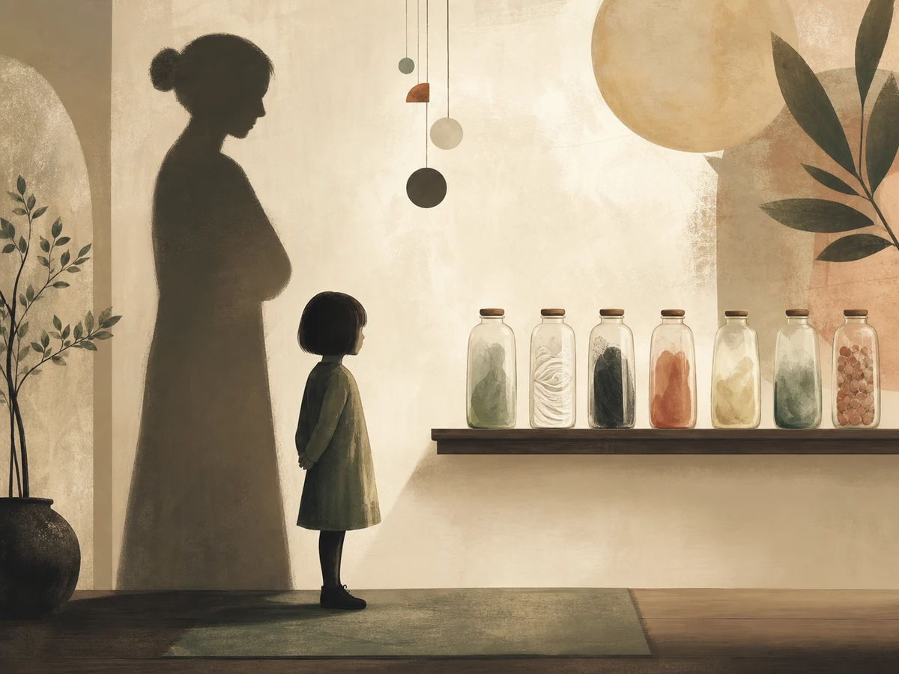
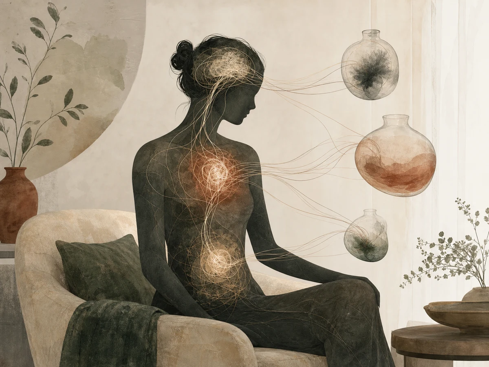

В своя опит или в общуването с други хора всички сме се срещали с „бутилирани емоции“. Как обаче изглеждат те в действие, защото лесно можем да се досетим, че това са потиснати или отречени емоции?
Сигурно се сещате за случаи, в които сте били тъжни или сте страдали за нещо, но социалната ситуация, в която се намирате, е изисквала да се усмихнете; или пък за онзи човек, който гордо твърди, че може да работи под интензивно напрежение и да се справя с всякакви трудни ситуации, запазвайки спокойствие, но в следващия момент избухва гневно в разговор с детето си.
Възможно е да възразите и да кажете: „но човек не може да реагира винаги спонтанно и всъщност често е необходимо да владее емоциите си.“ Да, но има важна разлика дали владеем емоциите си, като ги потискаме и отричаме или като ги регулираме.
Успешната регулация на емоциите е полезна за пълноценното чувство за себе си и за социалното ни функциониране. Тя е свързана с умението да разбираме чувствата си, да ги приемаме и да можем да ги комуникираме успешно, изразявайки своето преживяване и зачитайки това на отсрещния човек.
Бутилирането на емоции е провокирано от страх, че човек може да изглежда слаб, несправящ се, незнаещ или най-общо — по-малко пълноценен и значим спрямо очакванията: своите или пък тези на другите.
Отричането или потискането на емоциите е опит да се защитим, но обръщайки гръб на онова, което действително се случва. Всъщност, не е възможно емоциите да бъдат избегнати и „накарани“ да изчезнат. Когато не им обръщаме внимание, те намират своя изход, влияейки на психичното, а понякога и на физическото ни здраве.
Защо бутилираме емоциите си
Преди малко стана дума, че потискането и отричането на емоциите е свързано със страх, с желание да се предпазим от опасност и от това да бъдем уязвими. Тази стратегия за защита често води своята история от детските години на човек и взаимоотношенията му с най-близките грижещи се възрастни, обичайно това са родителите.
Свързана е с реакция на пренебрежение или омаловажаване на емоциите на детето от родителите или родители, които са страшни в изразяването на собствените си емоции, така че детето да се е чувствало заплашено. По този начин задушаването или избягването на емоционално изразяване се усеща като страх от „не“, от изоставяне или негативна оценка. Когато това се повтаря многократно, децата порастват като възрастни, които бутилират емоциите си.

Какво се случва, когато бутилираме емоциите си
Натоварване на психичното здраве. Когато избягвате чувствата си, те ще започнат да се проявяват изневиделица, маскирани като постоянно присъстващо притеснение или различна степен на тревога. Ще изпитвате все по-нарастваща трудност да им се доверявате и да се обръщате към тях, за да разбирате себе си, взаимоотношенията и ситуациите, в които участвате.
Хроничното отхвърляне на чувствата влияе върху самочувствието и може да започнете да преживявате света наоколо сякаш никой не се интересува от нуждите и желанията ви, а това да провокира раздразнение, обида или гняв към другите, които от своя страна ще изпитват трудност да разберат какво провокира реакциите ви към тях.
Компрометиране на физическото здраве. Научно обосновани сведения дават информация, че потискането или отричането на емоциите предизвиква повишени нива на стрес в тялото. Съществуват връзки между емоциите и нервната, ендокринната, имунната и храносмилателната система. Например страхът и тревогата могат да повишат нивата на кортизол, риска от диабет, от сърдечно-съдови заболявания или да окажат влияние върху силата на имунитета.

Засегнати социални взаимоотношения. Социалното общуване е изключително важно за чувството ни за цялост и пълноценен живот. В социалните контакти ние учим, развиваме се, откриваме подкрепа, чрез тях принадлежим и се чувстваме част от група, екип, общност. Когато човек се затруднява да разкрие себе си, социалните му взаимоотношения обичайно постепенно се ограничават или затрудняват.
Изследвания дават информация, че хората, които бутилират емоциите си, са по-склонни да избягват близки взаимоотношения, по-малко удовлетворени са от живота и са по-склонни да изпитват симптоми на депресия. Неуспехът за среща с емоциите е отблизо свързан и със стремежа за избягване на конфронтация.
Когато ни е трудно да адресираме допълненията, притесненията или несъгласията, които имаме в дадено общуване, започваме да се чувстваме неспокойни и неравни в напрегнати или конфликтни ситуации, а това също оказва влияние върху социалните контакти и пълноценното чувство за себе си, особено в професионална среда.
Нездравословни механизми за справяне. Възможно е заради високите нива на дистрес, които преживявате, когато потискате или отричате емоциите си, да започнете да реагирате остро и избухливо на всичко и да чувствате, че нямате контрол върху свръхреакциите си. Прекомерната употреба на алкохол, прибягване към медикаменти или злоупотребата с наркотични вещества са други възможни механизми за справяне с напрежението, свързано с бутилираните емоции.
Биха могли да настъпят също така и промени в начина на хранене, така че да наддавате бързо или да губите рязко тегло, без да успявате да влияете върху тези процеси. Хранителните навици имат пряка връзка с физическото и психичното здраве.
Кои са знаците, които ни казват, че бутилираме емоциите си
Има случаи, в които съзнателно потискаме или отричаме чувствата си, но и много, в които правим това, без да го осъзнаваме. Какво можем да забележим наоколо, когато бутилираме емоциите си:
- все по-често появяващо се преживяване, че другите хора не ви „разбират“;
- упорстващо чувство за неудовлетворение от времето, което прекарвате с другите;
- чести соматични неразположения или симптоми, например влошен сън, напрежение, разстроен стомах, проблеми с храносмилането, сърцебиене и др.;
- нарастващ гняв и разочарование от света и другите;
- трудност да говорите или разказвате за себе си.
Какво би помогнало да бъдете по-близо до емоциите си
Колкото повече съумеете да развиете уменията си за емоционална регулация, толкова по-възможно би било да се доближите до чувствата си. Емоционалната регулация включва осъзнатост: за да знаете какво чувствате, е необходимо да обръщате внимание на преживяванията си и да се стремите да им давате имена, без да сте критични или осъдителни към себе си.
Включва и когнитивно преформулиране: когато започнете по-ясно да разграничавате преживяванията си и да чувствате повече спокойствие, назовавайки емоциите си, бихте могли да опитате да разширите начина, по който мислите за дадена ситуация, особено трудна или конфликтна. Ако съумеете да си дадете сметка, че по-често конфронтациите между хората се случват поради неразбиране на другия или стремеж на всеки да се предпази от неприятни преживявания, а не умишлено, вероятно ще успеете да погледнете върху случващото се различно и да участвате по-градивно.
Понякога емоциите са просто неприятни, трудни, болезнени и няма нещо, което би могло да се направи, освен да ги приемем и да намерим начин да продължим заедно с тях.
Грижата за физическото здраве помага, за да разредите напрежението и натрупаните неприятни емоции, като по този начин тялото произвежда повече ендорфини — хормони на щастието. Физическата активност помага, за да се чувствате по-добре и освобождава емоционално пространство да посрещнете преживяванията си.
Разговорът с близък човек може да бъде много полезен, за да разкажете за себе си и, чувайки преживяванията си, да се свържете с чувствата, през които преминавате и получавайки подкрепа, да откриете нови гледни точки към емоциите си.
Консултация с психотерапевт: ако чувствате, че не успявате да се справите сами или с подкрепата на близките ви хора и продължавате да се чувствате дистанцирани от преживяванията си, да не разбирате мислите и усещанията си, психотерапевт може да ви помогне да изследвате това, през което преминавате, в защитена и сигурна среда.
Източници
- Verywell Mind — The Dangers of Bottling Up Our Emotions.
- Kentucky Counseling Center — How Bottling Up Your Emotions Is Bad for You.
- CALDA Clinic — Dangers of Suppressing Emotions.